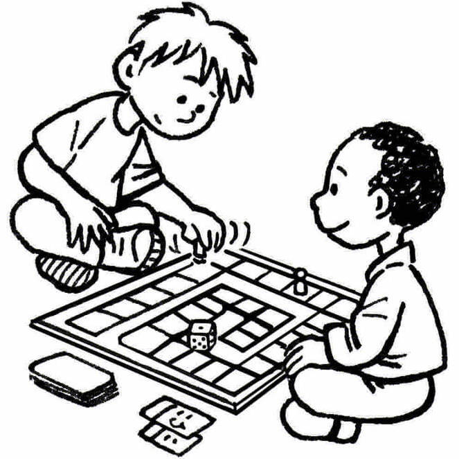

Quizz
(en cours de développement)
Dans ce quizz, des questions vous seront posées sur plusieurs termes autour de la Botanique.
Répondez juste et gagnez des points afin de pouvoir acheter des bonus lors de vos parties.

Solo
Le mode solo vous permet de jouer face à votre ordinateur.
Le but est simple : être le dernier à mourrir.

OnSite - 1v1
OnSite - 1v1
(en cours de développement)
Le mode OnSite 1v1 vous permet de jouer avec un ami sur un seul ordinateur.
La partie se déroule en tour par tour et prends fin dès que l'un des joueurs meurt.
Réseau - 1v1
(en cours de développement)
Le mode Réseau 1v1 vous permet de jouer avec un ami mais cette fois-ci via Internet.